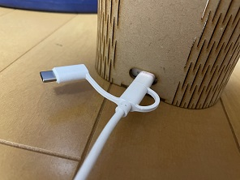

Design for Others
前回課題グループメンバーのページへのリンク
杉野真央
製品プロトタイプの写真＆動画
気分をリラックスさせる照明充電BOX

製品の説明
＊スケッチの写真＊
私たちが注目した、居酒屋で踊りながらトイレに消えた人物から様々な考えを話し合いました。
今まで作ったものを紹介しながら様々なアドバイスをもらいました。
例えば…
- もっと形をはっきりさせた方が良い
- 音楽を流してよりリラックスできるようにする
- コンパクトなスマートフォンのライトをもっと生かすには何が必要なのか…など
他の人もライトに関連した物作りをしていた人が多くいたので、光を使って人の心を刺激するものを作ろうという話になりました。
居酒屋で踊りながらトイレに行くほどお酒を飲んで発散させようとしている人に対してもっと良い方法がないか考えて見ました。
そこで私は、気分をリラックスさせる照明充電BOX
を作りました。
使用方法は…
スマートフォンのケースを取り、ライトを光らせる。
光っている側を、上に向けて蓋を閉める。音楽を流しながら使うと、よりリラックス効果が増す。
|実際に使用した動画｜
音楽 back number-水平線
使用機材
同じメンバーのDesign for Others-2のページへのリンク
杉野真央